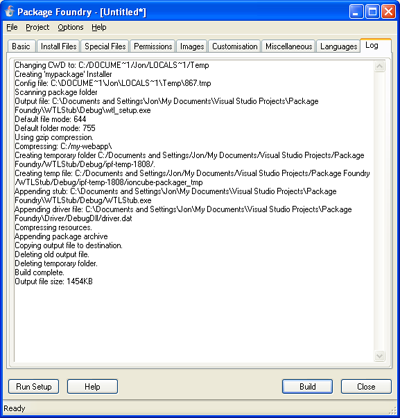

5.9. IPF Log
The status of the build process can be monitored on the Log tab:

When a build is started, the IPF GUI launches the IPF command-line tool. The command-line tool's output is displayed in the Log tab. If an error occurs during the build process, that error is displayed in a dialog.
Copyright 2002-2005 ionCube Ltd. All rights reserved.